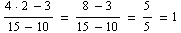
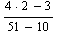
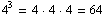
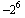
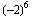
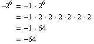
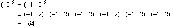

The order of operations is a set of rules dictating the order in which operations should be performed. The order of operations can be remembered using the monogram PEMDAS (Please Excuse My Dear Aunt Sally). It means that when evaluating an expression one must first perform operations in parentheses, secondly evaluate any exponents, third multiply and divide from left to right, and finally perform any addition and subtraction from left to right. Do not be misled by the fact that multiplication comes before division and addition before subtraction in the monogram PEMDAS: It is important to understand that multiplication and division should be performed simultaneously as they occur from left to right in the expression. The same is true for addition and subtraction. The role of the order of operations is to provide a consistent order so that every expression has only one value. Consider the following two examples and attempt to determine which is correct.
Example II.b.1: Evaluate 5 · 3 - 2
5 · 3 - 2
5 · 1
5
Example II.b.2: Evaluate 5 · 3 - 2
5 · 3 - 2
15 - 2
13
Certainly, we do not want to have any ambiguity about the value of the expression in the above two examples. This is exactly the purpose behind the order of operations. The order of operations dictate that we must first perform the multiplication and then the subtraction. Therefore, example II.b.2 has the correct value of 13 for this expression.
There will frequently arise cases in Algebra where we will want to perform addition before multiplication or multiplication before exponents. In other words, we will want to perform arithmetic operations out of order. This is specifically why the first step in the order of operations is to evaluate expressions inside of parentheses. Parentheses are not, however the only mathematical "thing" that allow operations to be performed out of order. Therefore, it is more convenient to consider the P in PEMDAS as grouping symbols. Another common grouping symbol is the bracket, ] or [. It is frequently convenient to use a bracket is situations where there are multiple sets of parentheses inside of each other. Using brackets makes it easier in these situations to identify which parentheses go together. The basic rule is that the right most parenthese is paired with the left most, the second from the right with the second from the left and so on. However this can get confusing, and introducing brackets can simplify the issue. As an example, for some students, evaluating the expression ((3 - 2) + (14 + 3) · 2) · 6 would better be denoted as [ (3 - 2) + (14 + 3) · 2 ] · 6. The advantage here is that the parentheses are paired and the brackets are paired. A third grouping symbol is the absolute value bars. These will be discussed further in section d of this chapter on integers. They are however simply vertical bars, | . One should understand that before taking the absolute value, we must first evaluate the expression contained inside the absolute value bars. The final grouping symbol is more abstract in that it is not a true symbol but rather an understanding of the notation of division. Divsion is frequently denoted by a horozontal line with dividend on the top (in the numerator) and divisor on the bottom (in the denominator). This bar operates as a grouping symbol in that we must first evaluate the expression in the numerator and the expression in the denominator before dividing the two.
Example II.b.4

That is, is an alternate way of writing the expression (4 · 2 - 3) ÷ (15 - 10).
Exponents do not play a very large role in the first half of algebra, but there are two specific ideas that should really be addressed now to eliminate confusion in the evaluating of expressions. The first idea is that exponents are a short way of writing repeated multiplication by the same number. Raising a value to a power means to multiply the value times itself that many times. Thus, . The second idea is that of raising negative numbers to an even power. It is important to think of a negative number as -1 times the number. It is also important to understand that the product of two negative numbers is a positive. The following example shows the import of recognizing this fact.
Example II.b.3: Evaluate and .


By recognizing that -2 = -1 · 2 and referring to the order of operations, we see that in the first case, we are raising 2 to the 6th power and then multiplying by -1 since exponents come before multiplication in PEMDAS. We therefore get a negative number. In contrast, the second expression involves parentheses indicating that we should first multiply -1 and 2 and then raise the product, -2, to the sixth power therefore giving a positive answer.